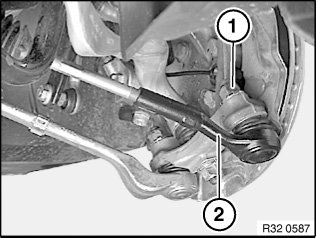
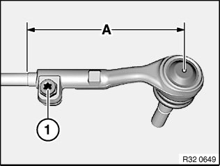

32 21 151 Replacing Left or Right Tie Rod
32 21 151 Replacing left or right tie rodNote:
If the tie rod end to tie rod screw/bolt connection is released, it is necessary after reinstallation to carry out a wheel/chassis alignment check.
Necessary preliminary tasks:
^ Remove front wheel
Important!
Do not release tie rod end from swivel bearing with impact tool.
Rubber gaiter of tie rod end must not be damaged!

Release nut (1); if necessary, grip at Torx socket.
Remove tie rod end (2) from swivel bearing.
Installation:
Keep tie rod end to swivel bearing connection clean and free from oil and grease.
Replace self-locking nut.
Tightening torque 32 21 3AZ.

Determine measurement (A) to simplify following adjustment of front axle.
Release bolt (1).
Screw off tie rod end; if necessary, grip tie rod with open-end wrench.
Installation:
Check gaiter for damage, replace if necessary.
Screw tie rod end onto tie rod to measurement (A).
Tightening torque 32 21 2AZ.
After installation:
^ Perform chassis alignment check
^ Carry out steering angle sensor adjustment/adjustment for active front steering